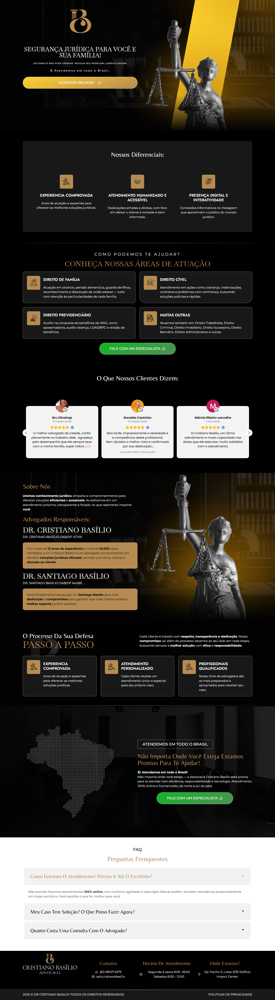
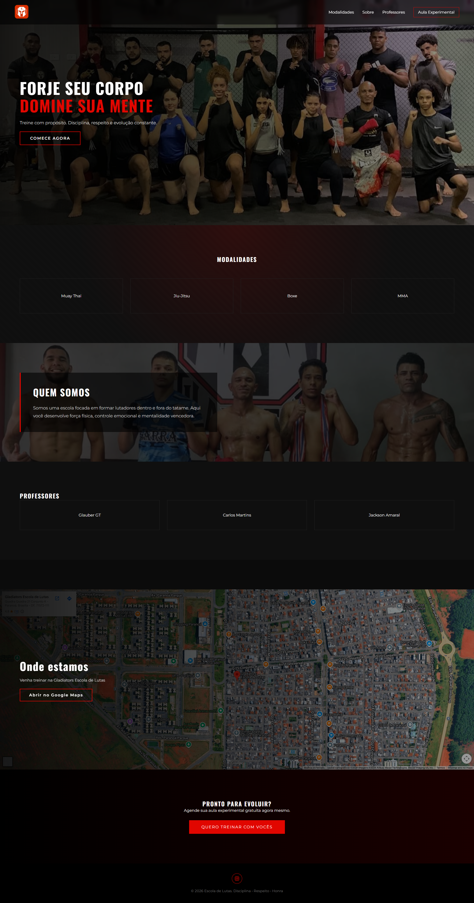

Suporte de TI e hardware
Montagem, manutenção e diagnóstico de computadores. Suporte técnico N1/N2, configuração de periféricos e de sistemas, para que a máquina do usuário volte a funcionar o quanto antes.
Disponível para vagas de Suporte Técnico no Distrito Federal
Suporte Técnico N1/N2 e Help Desk. Resolvendo problemas de TI na prática.
Gosto de tecnologia desde criança e hoje trabalho para que ela não atrapalhe o dia de ninguém. Tenho quase 2 anos de experiência em ambiente corporativo (escritório de advocacia), com atendimento a usuários, manutenção de computadores, suporte a sistemas e organização de rotinas. Atendo com agilidade, organização e linguagem clara.
O que eu faço no dia a dia de suporte, da bancada ao atendimento.
Montagem, manutenção e diagnóstico de computadores. Suporte técnico N1/N2, configuração de periféricos e de sistemas, para que a máquina do usuário volte a funcionar o quanto antes.
Fundamentos de redes de computadores e protocolos essenciais, como TCP/IP, para entender se o problema está na máquina ou na conexão.
Atendimento presencial e por telefone, com comunicação clara e empatia. Como instrutor voluntário, aprendi a explicar assuntos técnicos para públicos diversos.
Pacote Office, gestão de arquivos e documentos, entrada de dados em softwares corporativos e uso de certificados digitais.
HTML5 semântico, CSS3 responsivo (Mobile First, Flexbox e Grid) e JavaScript ES6+. Ajuda a conversar com times de desenvolvimento e a entender como as aplicações funcionam.
O caminho que eu sigo em cada chamado, do primeiro contato até o problema resolvido.
Escuto o usuário, confirmo o que aconteceu e o que já foi tentado, e identifico a urgência.
Separo a causa entre hardware, software, rede ou acesso, testando uma hipótese por vez.
Aplico a solução e explico em linguagem simples o que foi feito, sem jargão.
Documento o caso e confirmo com o usuário que tudo voltou a funcionar.
Escritório de advocacia, regime híbrido
Aproximadamente 2 anos
Trabalho voluntário
Sites que construí do zero com HTML, CSS e JavaScript. É uma competência complementar ao suporte técnico.


Página que você está vendo, feita com HTML, CSS e JavaScript e publicada no GitHub Pages.
Ver no GitHubEstou buscando uma oportunidade como Analista de Suporte, Help Desk ou Auxiliar de TI. Me chame e eu respondo o quanto antes.